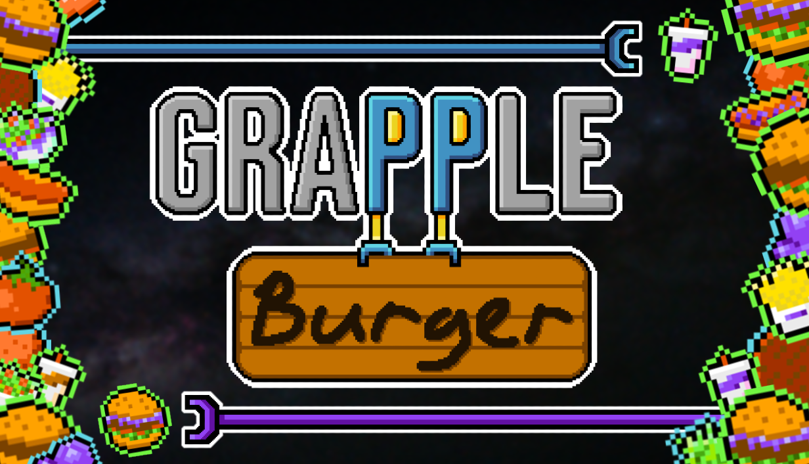

About me:
Hi! My name is Abigail (or Abby) Gill. I am a junior at Michigan State University majoring in games and interactive media. I'm also minoring in computer science. I've lived in Michigan my whole life. I grew up in the small town of Flushing, and graduated from Flushing High School in 2023. I quickly obtained an Associates in Arts degree from Mott Community College in Flint, then transferred to MSU in fall of 2024. So far, university has been going smoothly for me, and I'm looking to graduate in May of 2027.
I've had an interest in making games since I was a kid. Before I had the skill to handle a controller I would constantly ask my dad to play games for me, just so I could watch. The first games console my family owned was the Wii. I was so entranced by the design of Nintendo's Mario games that I would frequently design my own levels on sheets of graph paper, marking in tiles in the graph spaces. When Nintendo eventually released Super Mario Maker in 2015, I spent hours upon hours piecing together levels to share online with others. I've come a long way since then, picking up art and programming skills, and working with friends on small projects. Currently, I'm working on a game with my friend Chris Currier titled "GrappleBurger." It's a game where you play as a robot making food for other robots in a floating space-kitchen. In the future, I hope to have the skill to work on an organized team as a full-time job.
